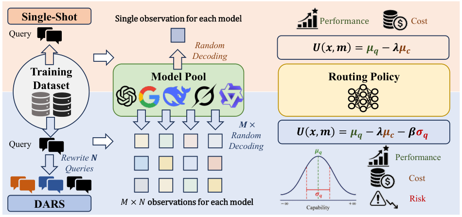

EMNLP 2026 · Main Conference
Distribution-Aware Routing Supervision
From Sampled Outcomes
to Capability Distributions
Rethinking Supervision for LLM Routing
Nanjing University · HKUST · SinapisAI · Frontier Robotics
One sampled answer can change which model looks best.
DARS builds routing supervision from repeated observations of model capability.
utility comparisons improve
router architectures evaluated
reasoning tasks × candidate LLMs
released scored generations
01 / The supervision question
How much can one
answer tell us?
LLM responses vary with query wording and stochastic decoding. A single observation can change a model's score, the preferred routing label, and the policy learned from that label.
DARS combines semantics-preserving query rewrites with repeated decoding to estimate expected quality, expected cost, and performance variability for each query–model pair.
Those estimates provide risk-aware targets for existing routers. Sampling is part of offline supervision construction; the trained router selects a model from the original query at inference.
See the label-instability analysis ↗02 / Method
Observe. Estimate. Route.
A common supervision source
across different router families.

Collect observations
Five query rewrites × five decodes per rewrite, for each candidate model in the full training protocol.
Estimate capability
Summarize mean quality μq, mean cost μc, and quality standard deviation σq.
Build supervision
Use capability estimates as regression targets or convert risk-aware utilities into routing preferences.
Risk-aware utility
U(x, m) = μq(x, m) − λ μc(x, m) − β σq(x, m)
Balance expected quality, cost, and performance variability.
Paper defaults: λ = 0.05 and β = 0.2.
03 / Results
Better supervision.
Across router families.
DARS improves utility in 40 of 42 router–task–evaluation settings. Explore every comparison below. Values are reported in the paper, with single-shot supervision averaged over 100 independently sampled training sets.
| Router | Rewrite: single-shot → DARS | Δ utility | Decoding: single-shot → DARS | Δ utility |
|---|---|---|---|---|
| MLP | 0.382 → 0.399 | +0.017 | 0.400 → 0.413 | +0.013 |
| kNN | 0.441 → 0.461 | +0.020 | 0.469 → 0.489 | +0.020 |
| EmbedLLM | 0.469 → 0.473 | +0.004 | 0.496 → 0.480 | -0.016 |
| AvengersPro | 0.464 → 0.480 | +0.016 | 0.490 → 0.496 | +0.006 |
| GraphRouter | 0.462 → 0.496 | +0.034 | 0.487 → 0.516 | +0.029 |
| MIRT | 0.409 → 0.444 | +0.035 | 0.433 → 0.468 | +0.035 |
| RM-Softmax | 0.453 → 0.477 | +0.024 | 0.475 → 0.512 | +0.037 |
λ = 0.05. Rewrite and decoding utility evaluate two separate test views. Two settings decrease: EmbedLLM / GPQA decoding and MLP / MATH-500 decoding. Download all 42 comparisons as CSV.
Sampling can be moderate
The 3 × 3 protocol performs close to the full 5 × 5 observation grid in the paper's sample-efficiency analysis.
Figure 4 ↗Single-shot labels can flip
GPQA has a 97.0% winner flip rate in the diagnostic analysis, illustrating how sampled outcomes alter model preferences.
Section 3.3 ↗Quality and cost matter together
DARS generally improves cost–quality trade-offs across the representative routers studied on GPQA.
Figure 5 ↗04 / Open benchmark
Start with the observations.
600 training queries and 1,148 held-out test queries, evaluated with a heterogeneous pool of six LLMs. Download the precomputed scores to study routing without paid generation calls.
| Dataset | Task | Train queries / rows | Test queries / rows |
|---|---|---|---|
| GPQA | Graduate-level science QA | 200 / 30,000 | 248 / 8,928 |
| MATH-500 | Mathematical reasoning | 200 / 30,000 | 300 / 10,800 |
| DROP-800 | Discrete reasoning over text | 200 / 30,000 | 600 / 21,600 |
Candidate models Gemma-3-12B-IT · Mistral-Small-3.2-24B-Instruct · Qwen3-32B · Llama-3.3-70B-Instruct · Gemini-2.5-Flash-Lite · DeepSeek-Chat-V3.1
Explore in Python
from datasets import load_dataset
data = load_dataset("AIGNLAI/DARS", "gpqa")
print(data["train"][0]["score"])Install datasets first. Also available: math-500 and drop-800.
Reproduce routing experiments
Run the repository's download and router commands with the released JSONL files. Seven router implementations share the same supervision comparison protocol.
Follow the quick start ↗Exact paper comparisons require matching the encoder, hyperparameters, seeds, and observation settings. TF-IDF is provided for an easy pipeline check.
05 / Citation
Build on DARS.
@inproceedings{lai2026dars,
title = {From Sampled Outcomes to Capability Distributions:
Rethinking Supervision for {LLM} Routing},
author = {Lai, Guannan and Hu, Haoran and Chen, Long
and Li, Zhenguo and Ye, Han-Jia},
booktitle = {Proceedings of the 2026 Conference on Empirical
Methods in Natural Language Processing},
year = {2026},
url = {https://arxiv.org/abs/2606.06924}
}Accepted to EMNLP 2026 Main. The citation URL points to the arXiv version. Machine-readable citation ↗
Research scope
This study covers single-step routing with three English reasoning tasks and a fixed six-model pool. Repeated observations add offline collection cost. See the paper and dataset card for limitations, scoring conventions, and source-data terms.